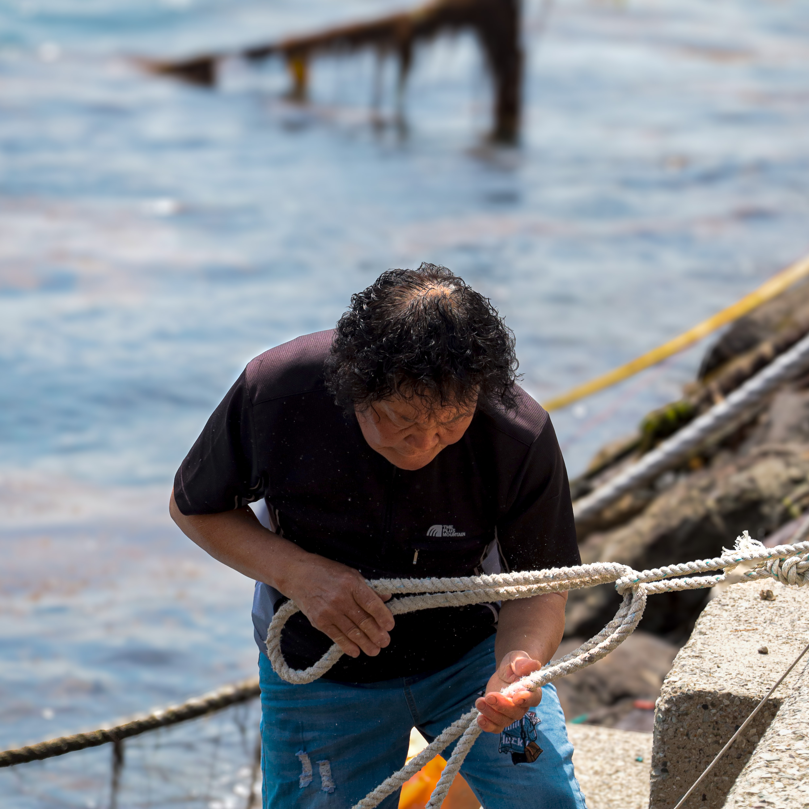
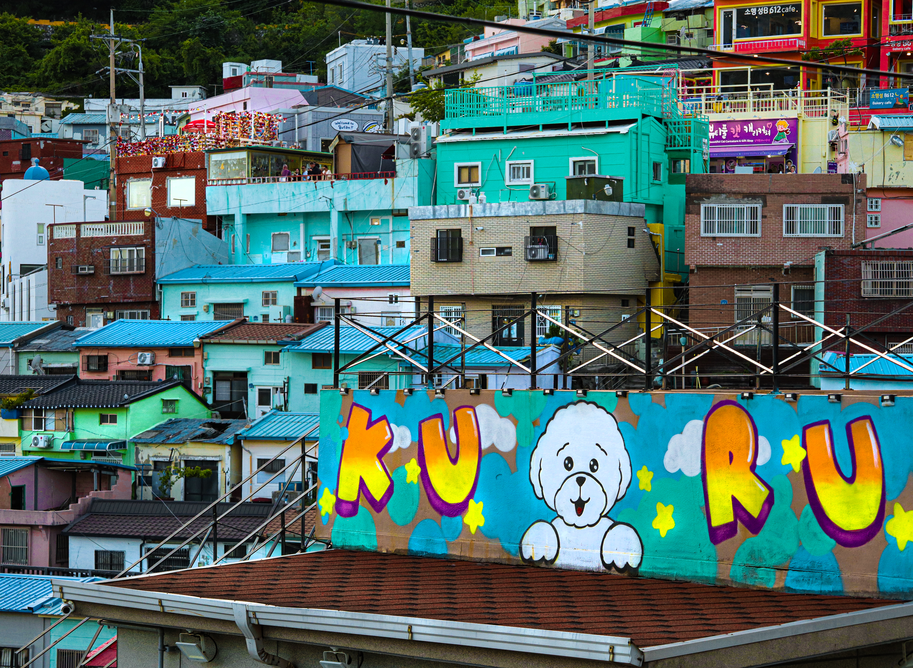
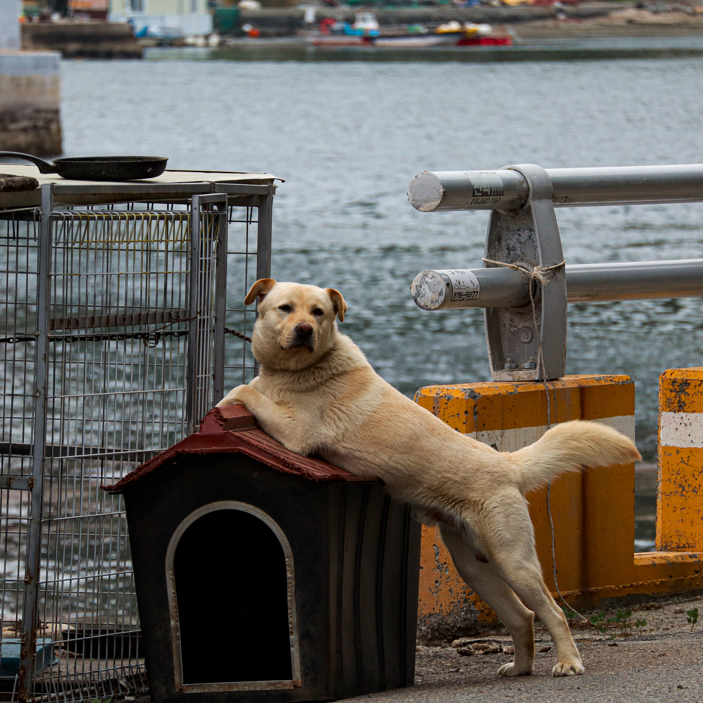
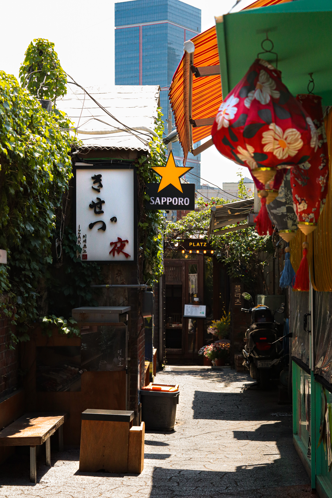
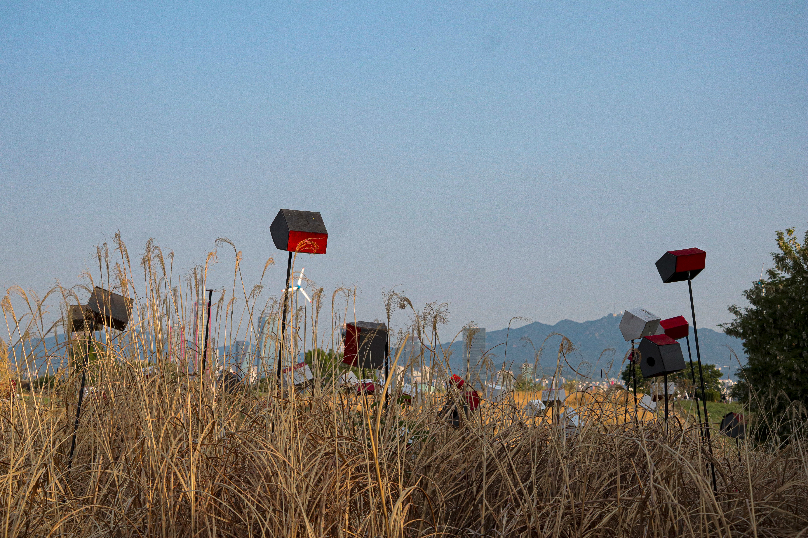

02 — Photographie
Galerie photo
À remplacer : une phrase d'intro sur ta pratique photo — style, thèmes de prédilection, matériel utilisé. Clique sur une catégorie pour filtrer la galerie.
Photo 01
Portrait — à remplacer
Photo 02
Paysage — à remplacer
 Photo 03
Photo 03
Urbain — à remplacer

Photo 04Noir & blanc — à remplacer
Photo 05
Portrait — à remplacer

Photo 06Paysage — à remplacer

Photo 07Urbain — à remplacer
 Photo 08
Photo 08
Noir & blanc — à remplacer
Photo 09
Portrait — à remplacer
 Photo 10
Photo 10
Portrait — à remplacer
Photo 11
Portrait — à remplacer
Photo 12
Portrait — à remplacer
Photo 13
Portrait — à remplacer
Photo 14
Portrait — à remplacer
Photo 15
Portrait — à remplacer
Photo 16
Portrait — à remplacer
Photo 17
Portrait — à remplacer
Photo 18
Portrait — à remplacer
Photo 19
Portrait — à remplacer
Photo 20
Portrait — à remplacer
Photo 21
Portrait — à remplacer

Photo 22Portrait — à remplacer
Photo 23
Portrait — à remplacer
Photo 24
Portrait — à remplacer
Photo 25
Portrait — à remplacer

Photo 26Portrait — à remplacer
 Photo 27
Photo 27
Portrait — à remplacer
Photo 28
Portrait — à remplacer
Photo 29
Portrait — à remplacer
Photo 30
Portrait — à remplacer
Photo 31
Portrait — à remplacer
Photo 32
Portrait — à remplacer